おきのはま製パン 看板を店に付けた見え方
決まった3つの看板（窯から食パンが出てくる横長看板、頭と尻に麦の束を付けた袖看板、焼き上がりの時刻の店先メニュー）を、2階建ての店に取り付けて Blender で描きました。
店の1階は、サイトと同じ生成りの塗り壁と深緑の木の建具にして、入口の上に深緑のテントを張りました。窓ぎわの平台とうしろの棚に、食パンと丸パンを並べています。店先メニューは、深緑の枠のA型の立て看板です。
昼 通りの左手前から
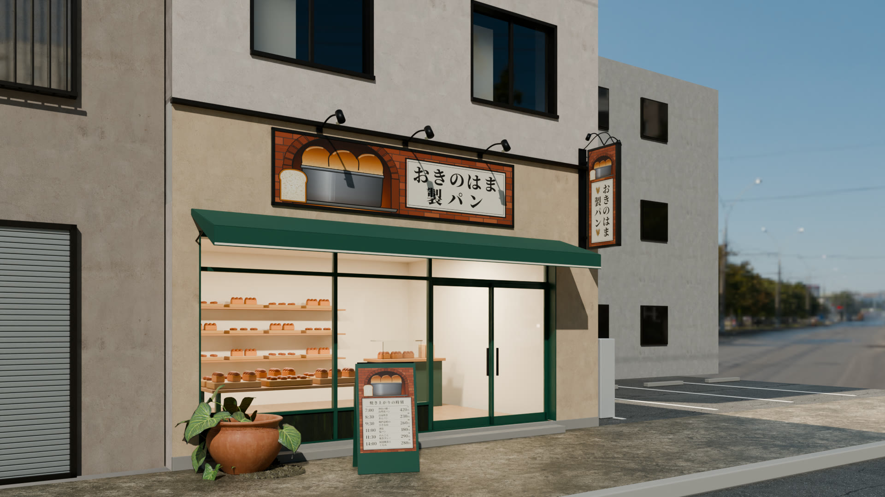
昼 道の向かいから正面
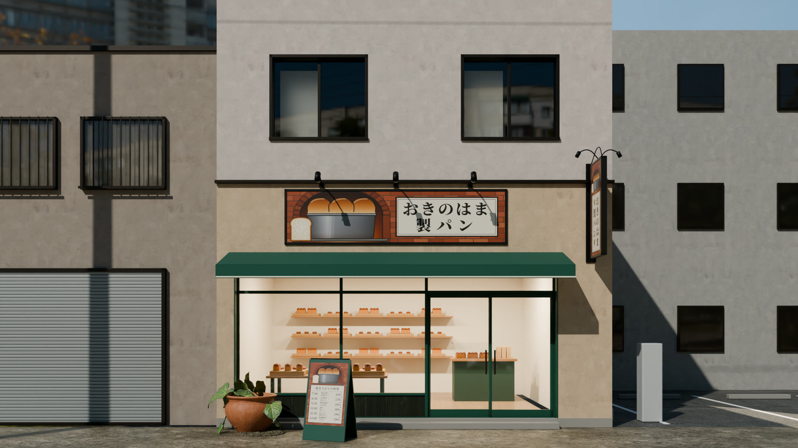
昼 右から歩いてきたときの袖看板
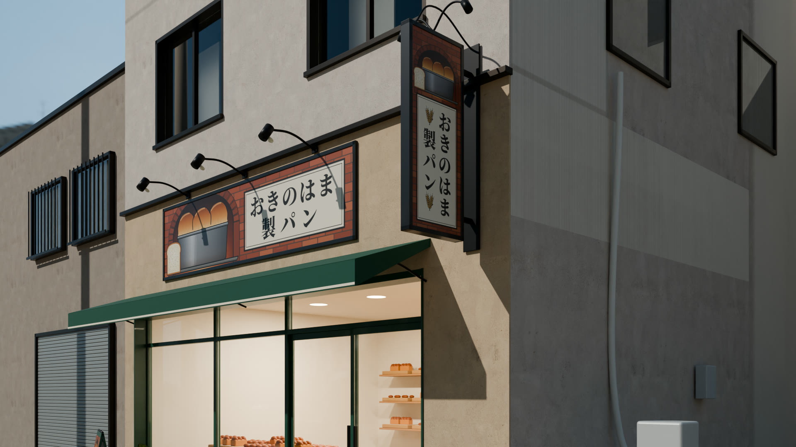
昼 入口の前で見上げた横長看板
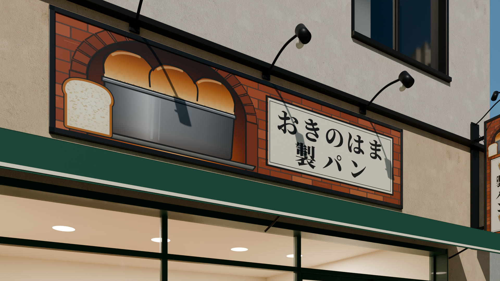
昼 店先メニュー
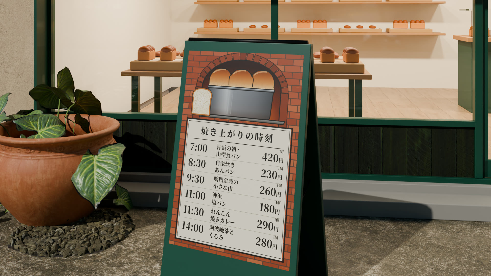
夕方 看板灯と店の明かりを点けたところ
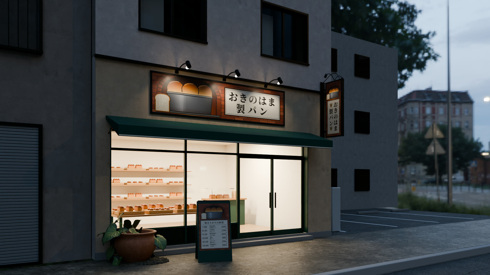
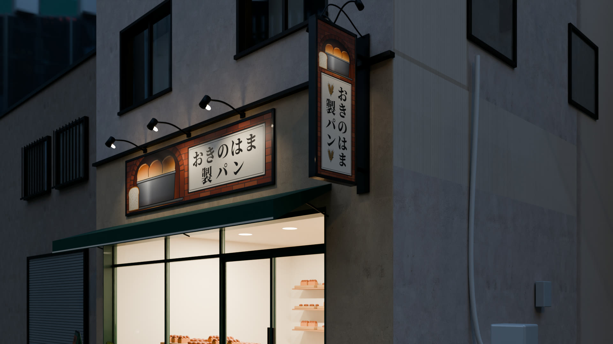
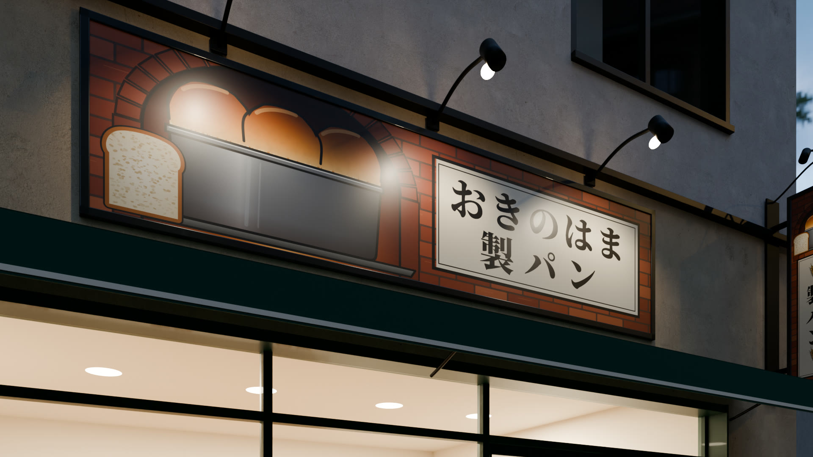
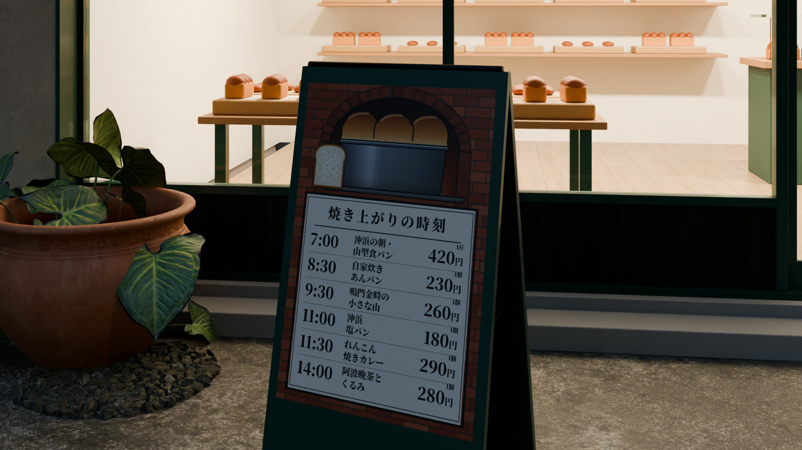
助任珈琲豆店 店先メニューを足した見え方
前に「いいね」をもらった店の前に、店先メニューをA型の立て看板にして置きました。ほかは前のままです。
昼 通りの左手前から
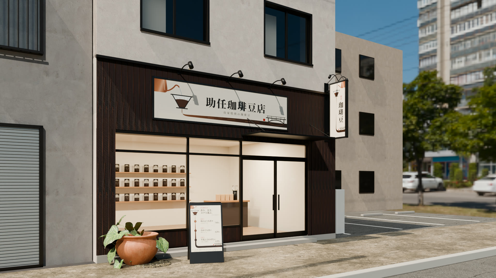
昼 店先メニュー
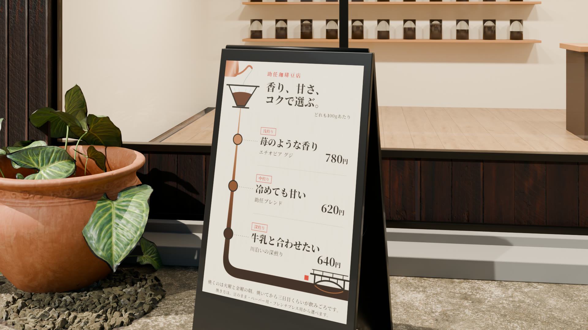
夕方
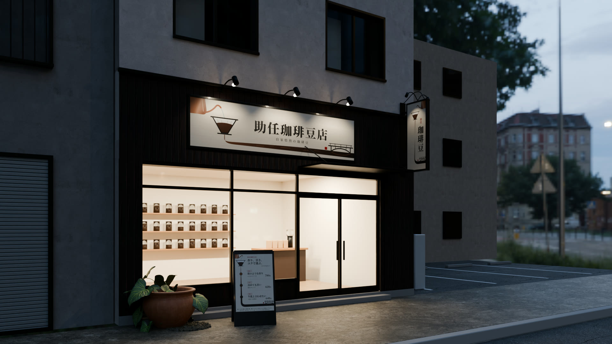
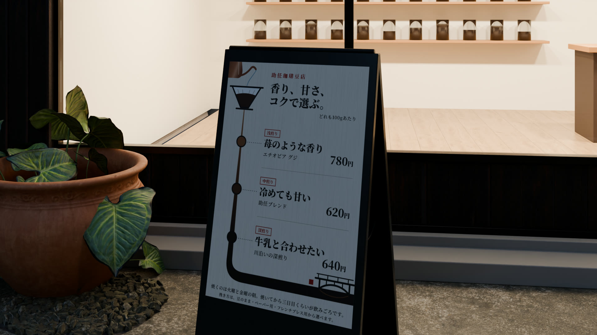
画像を押すと、大きく表示されます。店・住所・値段はすべて架空の見本です。